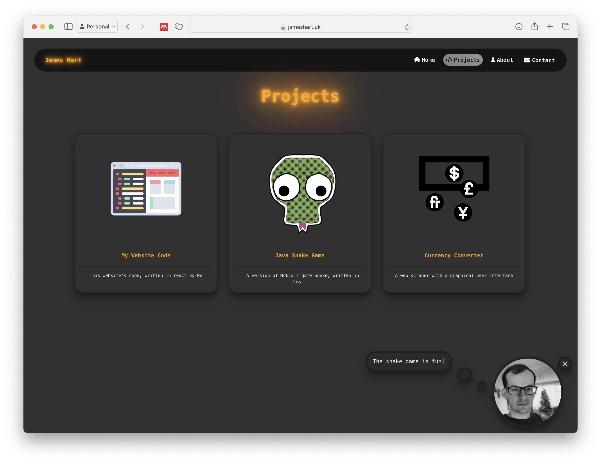
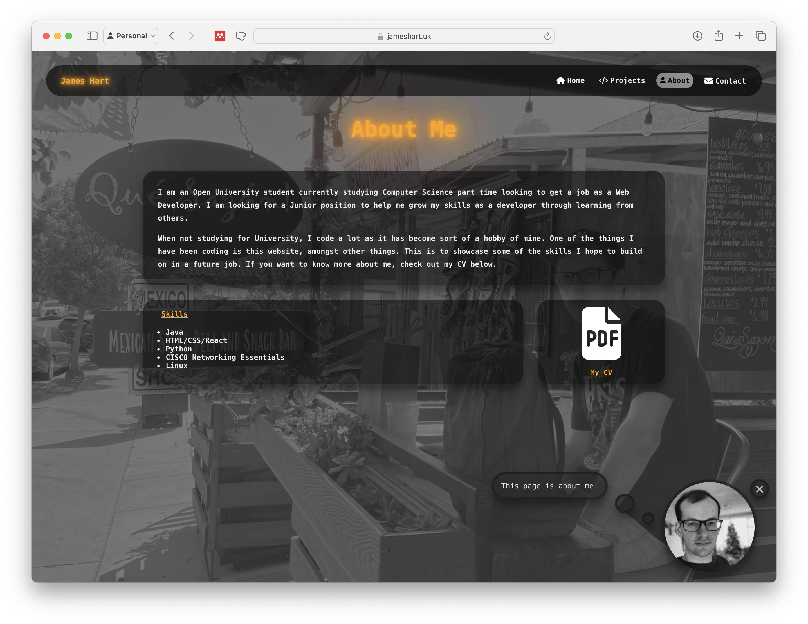
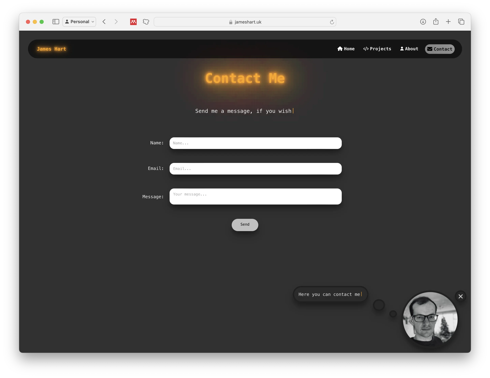

Old React Website

This website was very similar in style as my current website but was only available in dark mode.
The main page had a neon sign effect that made "Aspiring" flash and a little helper in the corner with my face on it.
The project elements wobbled when you hovered over them and there was an axis effect so the items moved as your mouse goes around the screen.
The CV PDF link also wobbled and linked to my CV like on my current website.

This page used EmailJS to send any emails from users.
I put some time and effort into creating this website so I was loath to just delete it. So, I gave it a page here, to remember it.